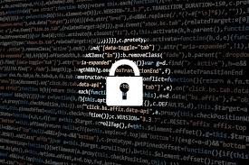

Introduction
Les professionnels de la cybersécurité sont des experts chargés de protéger les systèmes informatiques, les réseaux et les données contre les menaces et les attaques informatiques. Ils travaillent dans différents domaines liés à la sécurité informatique pour garantir la confidentialité, l'intégrité et la disponibilité des informations sensibles.



Compétences Requises
- Connaissance approfondie de la sécurité informatique : Compréhension approfondie des concepts de sécurité, des menaces, des vulnérabilités et des solutions de protection.
- Maîtrise des outils de sécurité : Familiarité avec une variété d'outils de sécurité, y compris les pare-feu, les IDS/IPS, les scanners de vulnérabilité, les SIEM, etc.
- Tests de vulnérabilité et test de pénétration : Capacité à identifier et à exploiter les vulnérabilités dans les systèmes.
- Audit de sécurité : Aptitude à évaluer la conformité aux normes de sécurité et à identifier les failles.
- Gestion de projet : Capacité à gérer des projets de sécurité, y compris la planification, la coordination et le suivi.
- Communication efficace : Communication claire et efficace pour travailler avec différentes parties prenantes et sensibiliser les employés à la sécurité.
- Conseil en sécurité : Capacité à fournir des conseils aux entreprises sur la meilleure façon de sécuriser leurs systèmes.
- Service client : Aptitude à travailler avec les clients pour résoudre leurs problèmes de sécurité.
Formations
- Niveau Baccalauréat (Bac) :
- Baccalauréat en Informatique : Vous pouvez commencer votre parcours en cybersécurité en obtenant un baccalauréat en informatique ou en génie informatique.
- Certifications de Base : Vous pouvez également envisager de commencer à obtenir des certifications de base telles que CompTIA Security+ pour vous initier à la sécurité informatique.
- Niveau Licence (Bac +3) :
- Licence en Informatique avec Spécialisation en Sécurité : Une licence en informatique avec une spécialisation en sécurité de l'information peut vous préparer aux métiers de base en cybersécurité.
- Certifications de Niveau Intermédiaire : À ce stade, vous pouvez viser des certifications intermédiaires telles que CEH (Certified Ethical Hacker) pour acquérir des compétences avancées en test d'intrusion.
- Niveau Master (Bac +5) :
- Master en Cybersécurité : Les programmes de master en cybersécurité offrent une formation avancée et vous permettent de vous spécialiser davantage dans un domaine spécifique de la sécurité informatique.
- Certifications Avancées : À ce niveau, envisagez des certifications avancées comme CISSP (Certified Information Systems Security Professional) ou CISM (Certified Information Security Manager) pour accéder à des postes de gestion et de direction.
- Formation Continue :
- La formation continue est essentielle dans le domaine de la cybersécurité, car les menaces évoluent constamment. Les professionnels de la cybersécurité doivent rester à jour grâce à des formations, des certifications et des ateliers pour maintenir leurs compétences actuelles.
Conclusion
Les professionnels de la cybersécurité jouent un rôle essentiel dans la protection des données et des systèmes informatiques contre les menaces en constante évolution. Ils contribuent à maintenir la sécurité et la confidentialité des informations critiques, tout en prévenant, détectant et répondant aux cyberattaques.